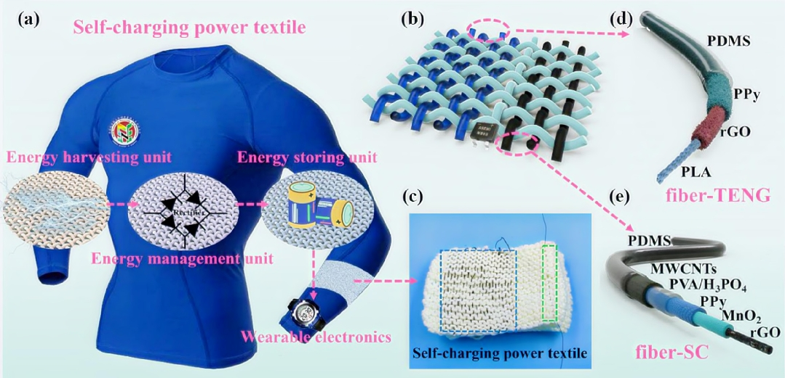
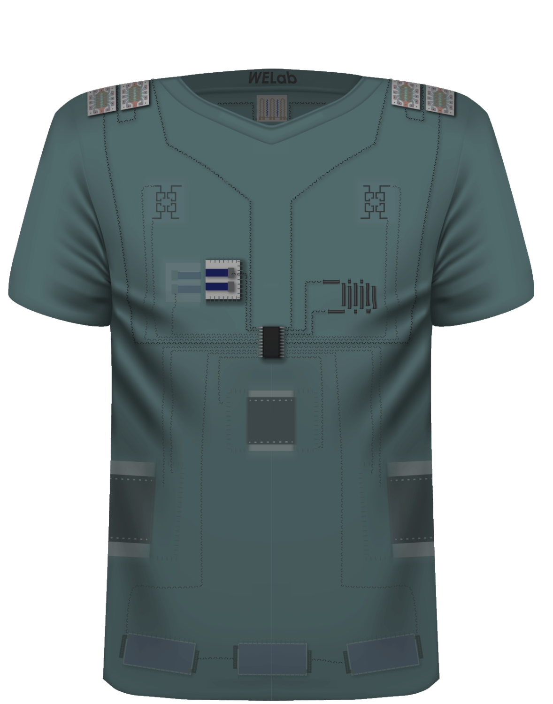
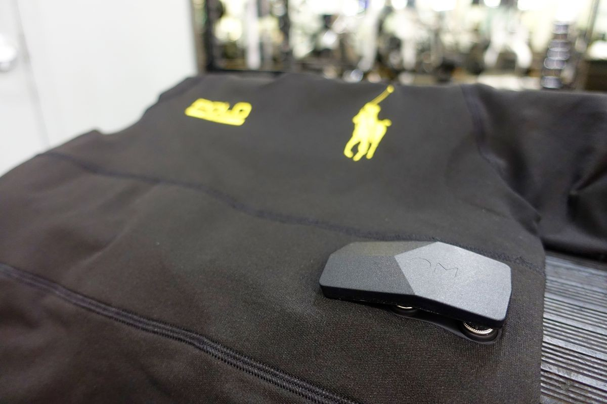

Overview of Smart Fabrics and Wearable Batteries
Smart fabrics, also known as electronic textiles (e-textiles), integrate advanced technology into textiles to enhance functionality and user experience. These fabrics can sense, react, and communicate with their environment, making them ideal for applications in health monitoring, fitness tracking, and more. A crucial aspect of these innovations is the development of lightweight, flexible, and efficient power sources that can be embedded directly into the fabric.
Innovations in Wearable Battery Technology
1. Zinc-ion Fiber Batteries
Researchers have developed a zinc-ion fiber battery that is lightweight, stretchable, and capable of significant energy storage (91 watt-hours per liter). This battery can stretch up to 230% of its original length and withstand over 1,000 charge-discharge cycles while retaining 98% of its capacity. It is designed to be embedded in smart clothing to power wearable devices like heart rate monitors and environmental sensors. This innovation aims to enhance personalized healthcare through durable and comfortable smart fabrics suitable for outdoor activities.

2. Flexible Textile Lithium Batteries
At the The Hong Kong Polytechnic University , a highly flexible textile lithium battery was created that offers an energy density exceeding 450 Wh/L. This battery can bend with a radius of less than 1 mm and endure over 1,000 cycles with minimal capacity loss. Its design incorporates metallic fabrics that serve as current collectors, enhancing both flexibility and energy efficiency. This development positions textile lithium batteries as a promising solution for the growing market of wearable technologies.
3. Embroidered Charge-Storing Systems
Researchers at the University of Massachusetts Amherst have introduced a method for embroidering charge-storing patterns onto garments using vapor-coated threads. This technique creates a flexible mesh of electrodes on fabric that can power wearable biosensors effectively. The use of micro-supercapacitors in this approach allows for high charge storage capacity while maintaining flexibility and comfort in wearables.

Applications and Future Directions
Smart fabrics equipped with advanced battery technology are set to revolutionize various fields:
- Healthcare Applications: Wearable health monitors track vital signs in real time, offering a new level of convenience for patients and healthcare providers alike.
- Fitness and Wellness: From smart shoes that track your steps to shirts that monitor your heart rate, wearable fitness tech has become a staple in the industry.
- Military and Defense: Smart fabrics can provide soldiers with heated clothing or uniforms that monitor physiological signals in extreme environments.
- Fashion and Lifestyle: With the integration of tech in fashion, we’re seeing items like LED-lit clothing, interactive dresses, and self-adjusting jackets that adapt to the climate.
Case Studies of Smart Fabrics and Wearable Batteries
Case Study 1: The Levi’s Jacquard Jacket by Google
Levi Strauss & Co. in partnership with Google , introduced the Jacquard smart jacket, a perfect example of wearable tech merging fashion and function. The jacket features conductive fibers woven into the fabric that allow users to control music, navigation, and phone calls using simple gestures on the sleeve. Powered by a small, detachable module in the jacket's cuff, this piece of wearable tech is a breakthrough in combining style with practical functionality. The jacket’s integration with wearable batteries allows for long-lasting use without compromising the garment’s comfort or design.
Key Highlights:
- Technology: Conductive fibers and touch-sensitive surfaces
- Battery Type: Rechargeable, lightweight, and integrated into the cuff
- Application: Gesture-based control for music, calls, and navigation
Case Study 2: Athos: Smart Fitness Apparel
Athoslive is a company that has taken wearable technology into the realm of fitness and health. Their smart fitness apparel, such as leggings and shirts, is embedded with sensors that monitor muscle activity, heart rate, and respiratory rate in real time. The clothing uses a combination of smart fabrics and wearable batteries to send this data to a smartphone app, providing detailed insights about your workout performance.
Athos’ smart fabric utilizes a special fabric material embedded with sensors that collect and transmit data to an app, enabling users to track their physical performance more efficiently. This is a perfect example of wearable tech that not only looks good but also serves a highly functional, health-conscious purpose.
Key Highlights:
- Technology: Embedded sensors in fabric for real-time data collection
- Battery Type: Flexible, lightweight batteries built into the clothing
- Application: Health tracking, fitness performance monitoring
Case Study 3: The Ralph Lauren PoloTech Shirt
Ralph Lauren PoloTech Shirt is another revolutionary piece of wearable technology, combining advanced fabrics with wearable batteries. This smart shirt is embedded with sensors that measure biometrics such as heart rate, breathing rate, and steps taken. The data is then synced to a mobile app, allowing users to track their fitness and health goals. The integration of a small, flexible battery provides the necessary power for the sensors to function throughout the day without interfering with the shirt’s comfort or appearance.
The PoloTech Shirt is a stylish and functional example of how wearable batteries can be seamlessly integrated into everyday clothing without compromising on design.

Key Highlights:
- Technology: Embedded biometric sensors for fitness tracking
- Battery Type: Lightweight, flexible battery hidden in the shirt
- Application: Fitness tracking and health monitoring
Case Study 4: Skidata: Smart Fabric for Safety in Workwear
In industrial settings, safety is paramount. Skidata, a company known for innovative workwear solutions, has incorporated smart fabrics into their uniforms. These uniforms are equipped with sensors that monitor vital signs such as body temperature and heart rate. In addition, the uniforms are designed to alert workers or supervisors to any changes in a worker’s health, such as signs of overheating or exhaustion, using an integrated wearable battery.
By embedding sensors and wireless communication technologies in workwear, Skidata offers a solution that increases safety while providing workers with increased mobility and comfort.
Key Highlights:
- Technology: Embedded health sensors for safety monitoring
- Battery Type: Flexible, lightweight batteries integrated into workwear
- Application: Worker safety and monitoring in hazardous environments
Challenges Ahead
Despite these advancements, several challenges remain:
- Power Consumption: Integrating electronics into textiles raises questions about power efficiency and battery life.
- Durability: Batteries must withstand regular wear and tear while remaining safe and reliable under various conditions.
- Sustainability: The environmental impact of producing these advanced materials needs consideration as the market expands
In conclusion, the merging of fashion with function through smart fabrics and wearable batteries holds great promise for the future of technology in everyday life. As research continues to evolve in this field, we can expect significant advancements that will enhance the usability and efficiency of wearable technologies across various sectors.